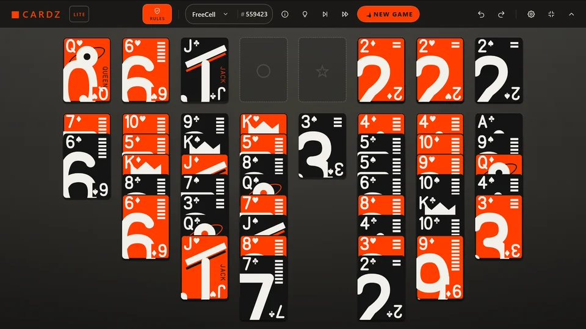

Dicas e jogo automático
Uma dica mostra uma boa jogada, e o jogo automático termina a partida. Ou desligue as regras.
Cardz Lite
O Cardz Lite é a edição gratuita do Cardz: sete jogos de paciência e seis baralhos, com dicas, pontuações e estatísticas.

Jogos
O Klondike compra uma ou três cartas, e o Spider se joga com um, dois ou quatro naipes. E ainda FreeCell, Yukon, Golf, Tri Peaks e Pyramid.

Pares que somam treze
Baralho Scarab
1, 2 e 4 naipes · Oito sequências perfeitas
Baralho Neon
Todas as cartas à vista
Baralho Monosolid
Limpe os três picos
Baralho Felt House
Mova pilhas inteiras de uma vez
Baralho para daltônicos
A um valor de distância
Baralho ScarabUma dica mostra uma boa jogada, e o jogo automático termina a partida. Ou desligue as regras.
Partidas, vitórias, derrotas e sequências de cada jogo. Klondike, Spider, Golf, Tri Peaks e Pyramid pontuam cada partida.
Felt House, Scarab, Neon e Monosolid, além de um baralho de alto contraste e um adequado para daltônicos.
A partida continua lá quando você volta, e o desfazer também. Jogue de novo qualquer partida pelo número dela.
Jogo completo pelo teclado, narração para leitores de tela, movimento reduzido e uma mesa espelhada para canhotos.
O aplicativo completo